A GTA — Guia de Trânsito Animal é o documento que acompanha todo animal que sai de uma propriedade para outra: para o abate, para engorda, para um leilão, para exposição. Sem ela a carga não anda, e quem é parado na estrada sem guia responde por isso.
A GTA não é documento fiscal eletrônico como a nota fiscal: é documento de defesa sanitária animal, e a emissão fica no sistema do estado — fechado, com login pessoal. Em Minas é o SIAPEC, do IMA; em São Paulo o GEDAVE; em Goiás o SIDAGO; no Pará o Sigeagro. Quem emite é o produtor ou o médico-veterinário habilitado, com a senha dele, dentro do portal.
Não adianta procurar um botão de “transmitir” no AgroDock: ele não pode existir.
E existe mesmo — só que ele não emite guia. É o GtaEmitidaWsService da PGA — Plataforma de Gestão Agropecuária, do Ministério da Agricultura. Repare no nome: GTA emitida. O método principal chama-se gravarGtaEmitida: quem chama já emitiu a guia e está apenas registrando isso. O próprio manual descreve o serviço como “mantém informações da Guia de Trânsito Animal, sem validação das informações do destino”. Nada ali gera número de guia, valida sanidade nem autoriza trânsito.
E quem chama esse serviço é o OESA — o Órgão Executor de Sanidade Agropecuária, ou seja, o próprio IMA em Minas, a Adepará no Pará. O fluxo é “dos OESAs para a PGA no MAPA”: é o estado prestando contas ao governo federal, não um canal para o produtor ou a assessoria emitir.
obterGtasEmitidaEstadual, obterGtasEmitidaDestino). Com credenciamento, o AgroDock poderia buscar sozinho as guias dos seus produtores — seria para a GTA o que o DF-e já é para a nota fiscal. O credenciamento, porém, é desenhado para OESA: é pergunta para o IMA ou para o gestor do sistema no MAPA.
As duas coisas que faltavam para quem atende vários produtores:
| O que faz | Para que serve |
|---|---|
| Guarda e vigia | Todas as guias dos produtores atendidos num lugar só: origem, destino, animais, número, emissão e validade. O sistema avisa quando a validade está acabando e mostra sozinho as que venceram. |
| Prepara a digitação | A conferência aponta, antes de abrir o portal, o que o portal vai cobrar. E a ficha de preparo é a folha com tudo conferido, na ordem das telas do portal, para quem for digitar não errar nem ficar procurando dado. |
Na prática: quem digita no portal deixa de abrir cinco cadastros para achar uma inscrição estadual, e para de descobrir na metade da digitação que falta a placa do caminhão.
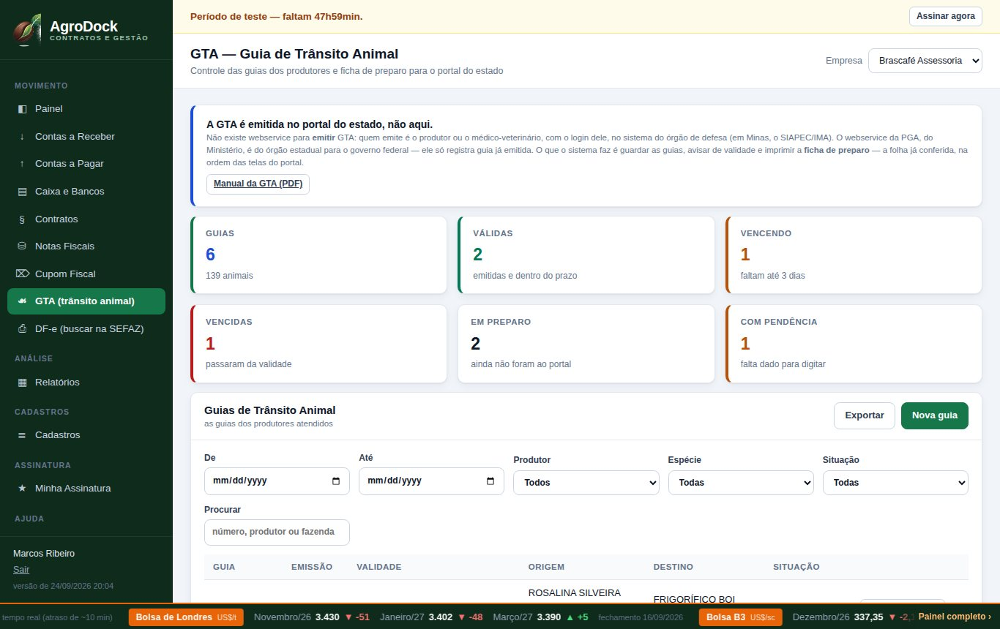
A GTA faz parte do Plano 3 e do Plano 4. Se o seu plano é o 1 ou o 2, o item GTA (trânsito animal) simplesmente não aparece no menu. Para mudar, vá em Minha Assinatura e escolha o plano — enquanto o pagamento não foi confirmado a troca é imediata.
| Plano | Inclui a GTA? |
|---|---|
| Plano 1 — contrato, financeiro e NF-e | não |
| Plano 2 — o mesmo, mais cupom fiscal | não |
| Plano 3 — o mesmo, mais GTA | sim |
| Plano 4 — cupom fiscal e GTA | sim |
Em Cadastros → Empresas, confira o estado (UF) da sua empresa. É por ele que o sistema sabe qual portal citar na ficha de preparo — em Minas, SIAPEC/IMA. Se a guia for emitida em outro estado, dá para escolher a UF emissora dentro da própria guia.
A guia tem dois lados: de onde os animais saem (origem) e para onde vão (destino). Cada lado é um produtor, e os dois vêm de Cadastros → Clientes e Fornecedores.
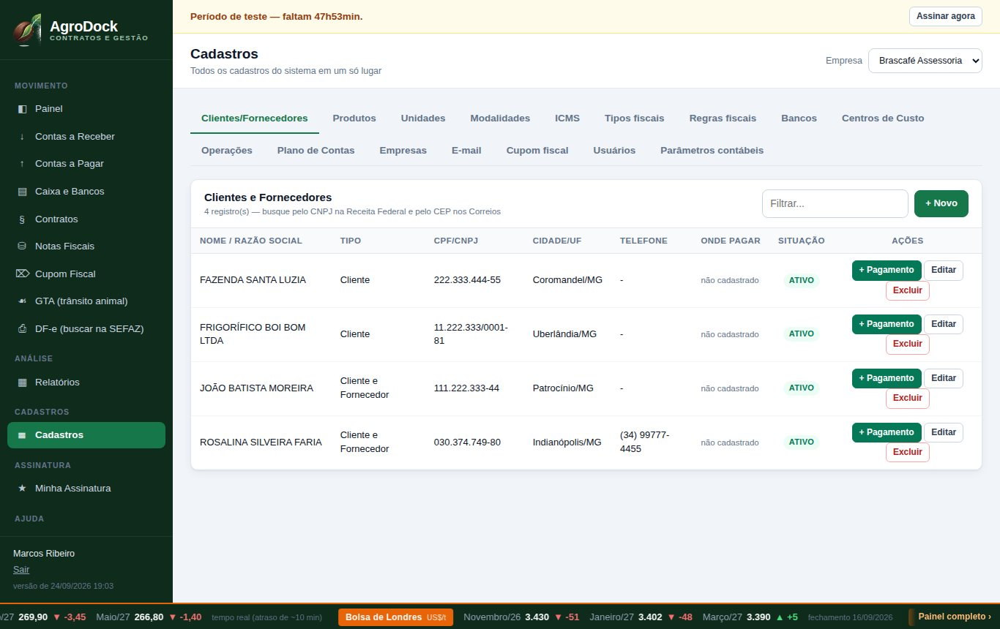
Na ficha do produtor, quatro campos são os que a GTA aproveita. Preencher esses quatro agora economiza digitação em toda guia daquele produtor:
| Campo | Por que a GTA precisa |
|---|---|
| Nome / Razão social | É o nome do produtor que vai na guia. |
| CPF / CNPJ | Identifica o produtor no portal. |
| RG / Inscrição estadual | O mais importante. É a inscrição estadual da propriedade — é por ela que o portal acha o cadastro da fazenda. Sem ela a conferência reclama e a digitação trava. |
| Cidade e UF | Município e estado da propriedade. É o que diz se o trânsito é dentro do estado ou interestadual. |
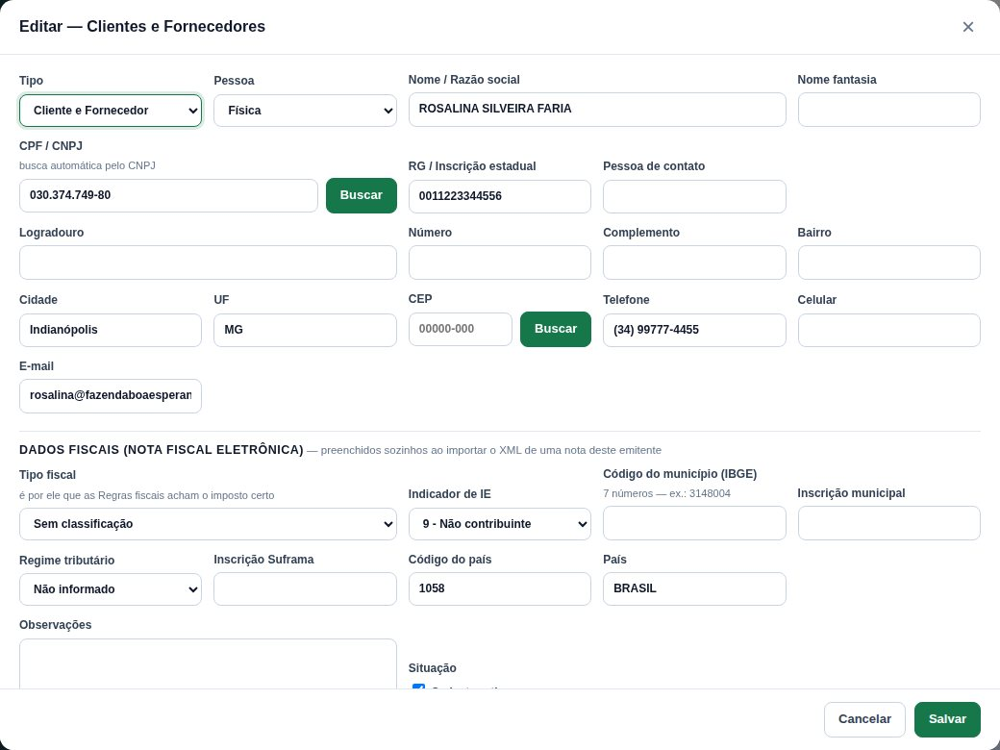
Três coisas são digitadas direto na guia, porque mudam de carga para carga:
Abra pelo menu Movimento → GTA (trânsito animal).
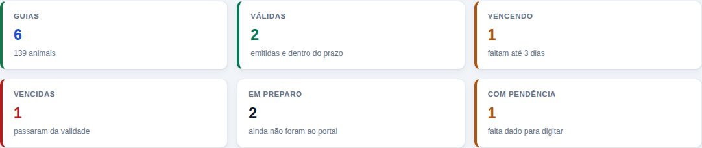
| Número | O que conta |
|---|---|
| Guias | Quantas guias o filtro achou, e o total de animais nelas. |
| Válidas | Emitidas e ainda dentro do prazo. |
| Vencendo | Faltam 3 dias ou menos para a validade acabar. É o número para olhar de manhã. |
| Vencidas | Passaram da validade sem serem usadas. O sistema conta sozinho, comparando a data — ninguém precisa marcar nada. |
| Em preparo | Guias montadas aqui que ainda não foram ao portal. |
| Com pendência | Guias em que a conferência achou algo faltando. Se esse número é zero, dá para digitar todas no portal sem susto. |
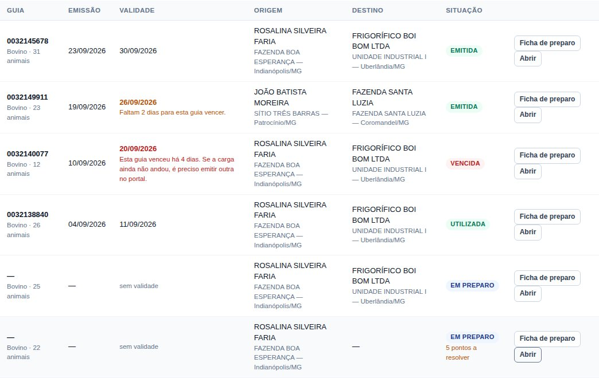
| Situação | O que quer dizer |
|---|---|
| Em preparo | Montada no AgroDock, ainda não emitida no portal. Não tem número nem validade. |
| Emitida | Saiu do portal e ainda vale. |
| Vencida | Emitida, mas passou da validade. O sistema mostra sozinho — e o filtro por “Vencida” usa a data, não o que alguém marcou. |
| Utilizada | A carga andou, a guia cumpriu o papel. |
| Cancelada | Cancelada no portal. |
Na coluna da situação, quando ainda falta algo, aparece em âmbar quantos pontos a resolver a conferência encontrou.
O caminho inteiro, do zero até a guia utilizada. Os passos 1 a 6 são no AgroDock, o 7 é no portal do estado, e o 8 em diante é voltar aqui para anotar.
Na tela da GTA, clique em Nova guia. A guia nasce como em preparo — é um rascunho: dá para salvar pela metade, fechar e voltar depois.
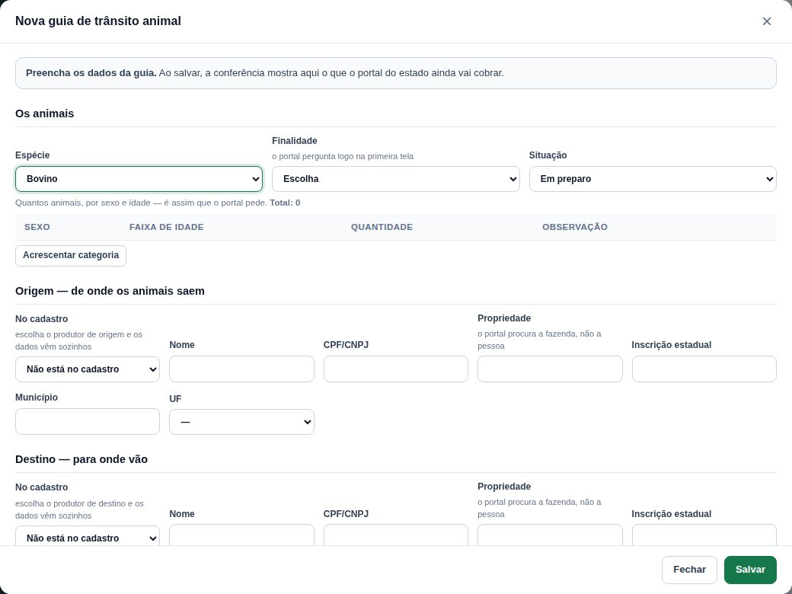
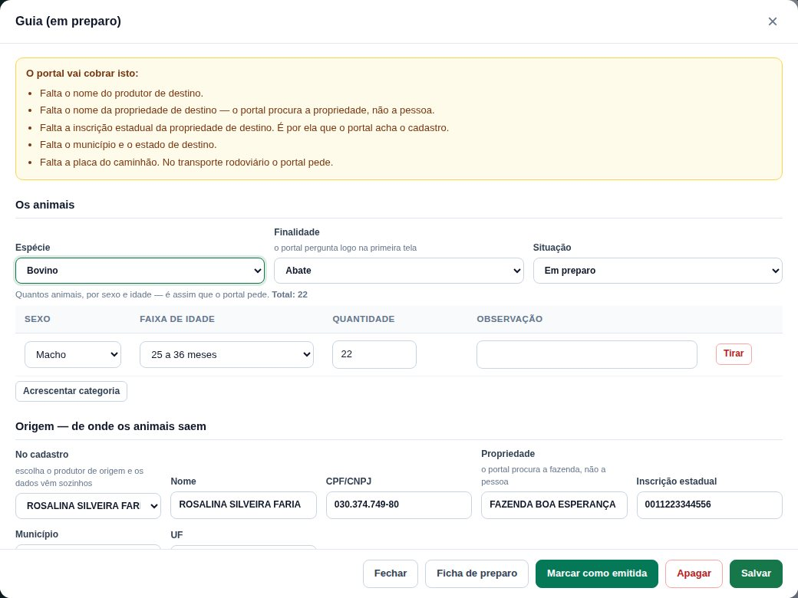
Cada lado tem o mesmo conjunto de campos. No campo No cadastro, escolha o produtor — nome, CPF/CNPJ, inscrição estadual, município e UF vêm sozinhos. Depois complete:
Se o produtor não está no cadastro (um comprador de uma vez só, por exemplo), deixe No cadastro em branco e digite os campos à mão. O que é digitado à mão sempre manda sobre o cadastro.
HMZ1A23.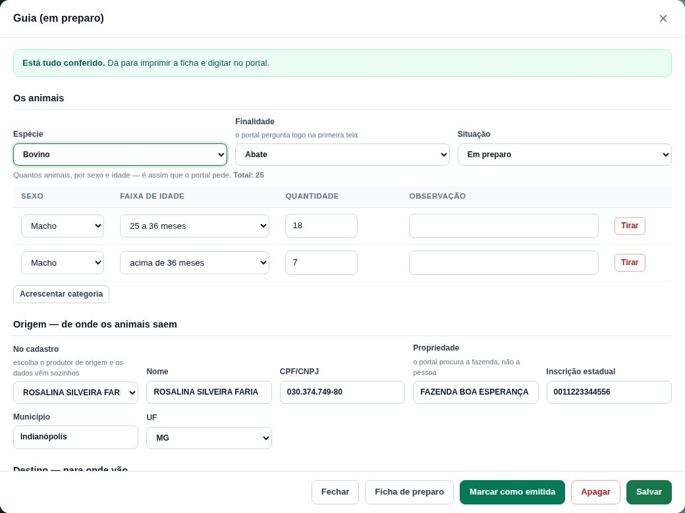
O quadro no alto do formulário é a conferência. Ele lista, em português, o que o portal vai cobrar. Enquanto houver item na lista, o quadro fica âmbar.
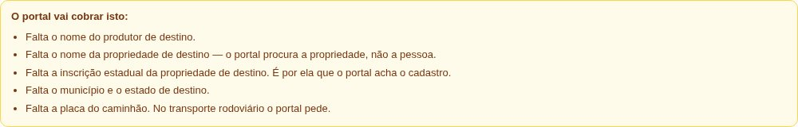
Quando não falta mais nada, ele fica verde:
O capítulo 5 tem a lista de todos os avisos e o que fazer em cada um.
Clique em Ficha de preparo — no rodapé do formulário ou na linha da lista. Abre uma folha A4 pronta para imprimir ou salvar em PDF. É ela que vai junto para o portal.
Agora sim, no portal — em Minas, SIAPEC (sistemas.ima.mg.gov.br), com o login do produtor ou do veterinário. Com a ficha ao lado, é só seguir de cima para baixo: os blocos estão na ordem em que o portal pergunta — origem, destino, animais, transporte, responsável técnico.
Emitiu? Volte ao AgroDock, abra a guia e preencha o bloco Depois de emitir no portal:
Depois clique em Marcar como emitida. O sistema não deixa marcar sem o número e sem a validade — e avisa qual dos dois falta.
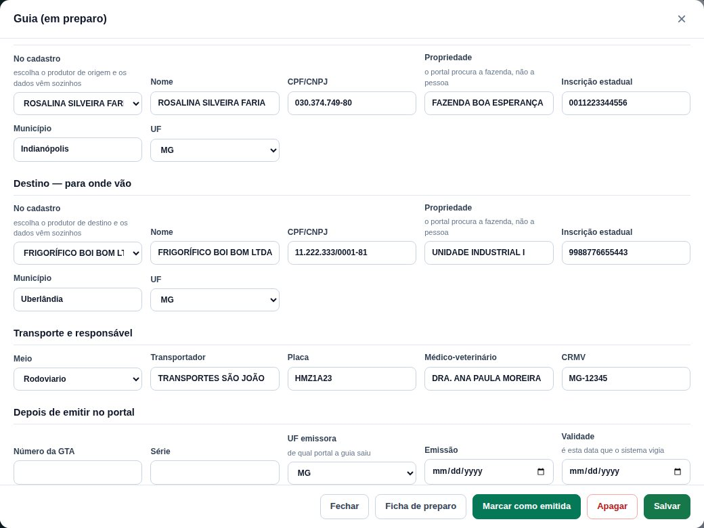
No campo PDF da guia, anexe o arquivo que o portal gerou (até 4 MB). Depois, o botão Baixar o PDF guardado devolve o arquivo quando alguém pedir — sem procurar em pasta de downloads nem em conversa de WhatsApp.
Abra a guia e clique em A carga andou: a situação passa a Utilizada e ela sai da conta das válidas e do aviso de vencimento. Se a guia tiver sido cancelada no portal, use Cancelada no portal — assim o histórico fica certo.
A conferência é o que economiza tempo de verdade: ela aponta o problema antes de você abrir o portal, quando ainda é barato resolver.
| O aviso | O que fazer |
|---|---|
| Falta a espécie dos animais | Escolha no campo Espécie. Ela decide as faixas de idade. |
| Falta a finalidade do transporte | Abate, engorda, reprodução… O portal pergunta na primeira tela. |
| Falta o nome do produtor de origem / destino | Escolha o produtor em No cadastro ou digite o nome. |
| Falta o nome da propriedade de origem / destino | Digite o nome da fazenda. O portal procura a propriedade, não a pessoa. |
| Falta a inscrição estadual da propriedade | É por ela que o portal acha o cadastro. Se o produtor está cadastrado, preencha o campo RG/Inscrição estadual na ficha dele que ela passa a vir sozinha. |
| Falta o município e o estado | Complete cidade e UF do lado que estiver faltando. |
| Falta dizer quantos animais vão, separados por sexo e idade | Acrescente ao menos uma categoria com quantidade maior que zero. |
| A quantidade total não bate com a soma das categorias | Confira as linhas: o total da guia é sempre a soma delas. |
| Uma categoria está sem o sexo do animal | Escolha macho ou fêmea na linha. |
| A faixa de idade “…” não é uma das que o portal usa para … | Aconteceu porque a espécie foi trocada depois das categorias. Escolha a faixa certa na lista (capítulo 10). |
| Falta a placa do caminhão | No transporte rodoviário o portal pede. Se for outro meio, troque o campo Meio. |
| O trânsito é de … para … — guia interestadual | Não é erro, é aviso: o portal vai exigir os exames sanitários em dia e, em geral, a assinatura do veterinário. |
| Falta o médico-veterinário e o CRMV | Aparece junto com o aviso de interestadual: sem eles a guia não sai. |
| Está marcada como emitida mas está sem número / sem data de validade | Complete o bloco Depois de emitir no portal. |
É a folha A4 que vai junto para o portal. Ela traz, no cabeçalho, o sistema e o órgão do estado — em Minas, SIAPEC / IMA, com o endereço — e o aviso de que aquela folha não é a GTA.
Depois vêm as pendências (em vermelho, se houver) e os blocos na ordem das telas do portal:
Campo em branco sai marcado — em branco —, em vermelho: é impossível não ver. E o bloco 6 sai com linhas em branco para anotar à caneta o número e a validade na hora em que a guia sair — depois é só passar para o sistema.
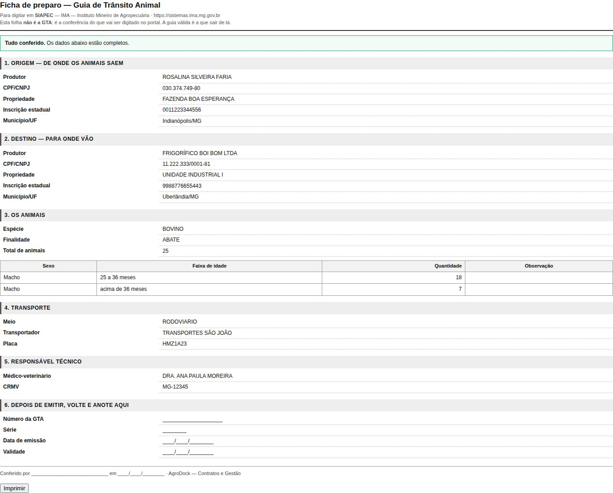
Guia vencida é carga parada. Por isso a validade é o campo mais vigiado da tela.
| Quando | O que aparece |
|---|---|
| Faltam mais de 3 dias | A data aparece normal, sem aviso. |
| Faltam 3 dias ou menos | A data fica âmbar e vem a frase: “Faltam 2 dias para esta guia vencer.” A guia entra no número Vencendo. |
| Vence hoje | “Esta guia vence hoje — a carga tem de sair hoje.” |
| Passou da data | A situação vira Vencida sozinha, em vermelho: “Esta guia venceu há 3 dias. Se a carga ainda não andou, é preciso emitir outra no portal.” |
| Já utilizada ou cancelada | A data fica quieta: a guia acabou, não há mais o que vigiar. |
Uma guia vencida não se conserta: a validade é do portal. Se a carga ainda não andou, é preciso emitir outra lá e cadastrar a nova aqui. A vencida fica no histórico, que é como tem de ser.
| Filtro | Para que serve |
|---|---|
| De / Até | Período pela data de emissão. Guia em preparo, que ainda não tem data, fica de fora quando você usa este filtro. |
| Produtor | Todas as guias de um produtor — de origem ou de destino. |
| Espécie | Bovino, suíno, equino… |
| Situação | Em preparo, emitida, utilizada, cancelada ou vencida. “Vencida” usa a data, não o que foi marcado à mão. |
| Procurar | Número da guia, nome do produtor ou nome da fazenda — dos dois lados. |
Os seis números do topo acompanham o filtro: filtrando por um produtor, eles passam a contar só as guias dele.
O botão Exportar baixa a lista que está na tela em CSV, para abrir no Excel — serve para mandar ao produtor o que ele tem de guia no período.
É a mesma tela, ajustada ao telefone — útil no curral, na hora de conferir o que está saindo.
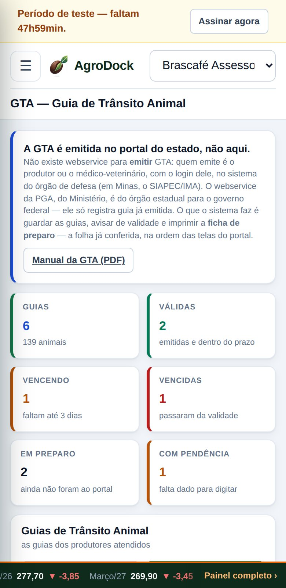
As faixas mudam com a espécie porque é assim que os portais pedem.
| Espécie | Faixas de idade |
|---|---|
| Bovino, bubalino | 0 a 12 meses · 13 a 24 meses · 25 a 36 meses · acima de 36 meses |
| Suíno | 0 a 3 meses · 4 a 8 meses · acima de 8 meses |
| Equino, muar, ovino, caprino | até 12 meses · acima de 12 meses |
| Aves, abelhas, peixes | qualquer idade |
Abate · Engorda · Reprodução · Cria · Recria · Exposição · Leilão · Esporte · Retorno · Quarentena · Outras
Rodoviário · A pé · Ferroviário · Aquaviário · Aéreo
É este nome que sai no cabeçalho da ficha de preparo, conforme a UF emissora da guia.
| Estado | Órgão | Sistema |
|---|---|---|
| Minas Gerais | IMA — Instituto Mineiro de Agropecuária | SIAPEC — sistemas.ima.mg.gov.br |
| São Paulo | CDA — Coordenadoria de Defesa Agropecuária | GEDAVE |
| Goiás | Agrodefesa | SIDAGO |
| Pará | Adepará | Sigeagro |
| Mato Grosso | Indea-MT | SIGDEA/INDEA |
| Mato Grosso do Sul | Iagro | e-Siapec |
| Bahia | ADAB | SIAPEC-BA |
| Espírito Santo | Idaf-ES | SigDef |
| Paraná | Adapar | GTA Eletrônica |
| Rio Grande do Sul | SEAPDR-RS | SDA |
| Santa Catarina | Cidasc | SIGEN+ |
Se a UF não estiver na lista, a ficha sai dizendo “órgão de defesa agropecuária do estado” — o resto funciona igual.
Não. A guia sai do portal do estado, com o login do produtor ou do veterinário. O AgroDock guarda, confere e prepara a digitação.
Existe — e não serve para emitir. O GtaEmitidaWsService, da PGA (Ministério da Agricultura), registra guia já emitida e é usado pelo órgão estadual para prestar contas ao governo federal. O capítulo 1 explica isso por extenso.
O seu plano é o 1 ou o 2. A GTA está no Plano 3 e no Plano 4 — troque em Minha Assinatura.
O campo no cadastro é o RG / Inscrição estadual. Se ele estiver vazio, a guia não tem de onde puxar. Preencha na ficha do produtor (Cadastros → Clientes e Fornecedores → Editar) e escolha o produtor de novo na guia — ou digite a inscrição direto na guia.
É de propósito: as faixas de idade de bovino não servem para suíno. Acrescente as categorias de novo, já com as faixas certas.
Muda. A conferência avisa que é interestadual e passa a exigir veterinário e CRMV. O portal também vai cobrar os exames sanitários em dia — isso é com o produtor e o veterinário, o sistema só lembra.
Falta o número ou a validade. São os dois dados que fazem a guia existir para o controle: sem validade não há o que vigiar.
Não. A validade é do portal — mudar a data aqui só criaria uma mentira no controle. Se a carga não andou, emita outra guia no portal e cadastre a nova.
Guia em preparo pode ser apagada e não volta — mas ela não tinha valor nenhum fora do sistema, era um rascunho. Monte outra. Guia já emitida com número o sistema não deixa apagar.
Não. Ela diz isso no próprio cabeçalho. É folha de conferência para quem vai digitar — o documento é a GTA que sair do portal.
Sim, a guia guarda esse vínculo. É útil quando a mesma carga tem contrato e nota no sistema.